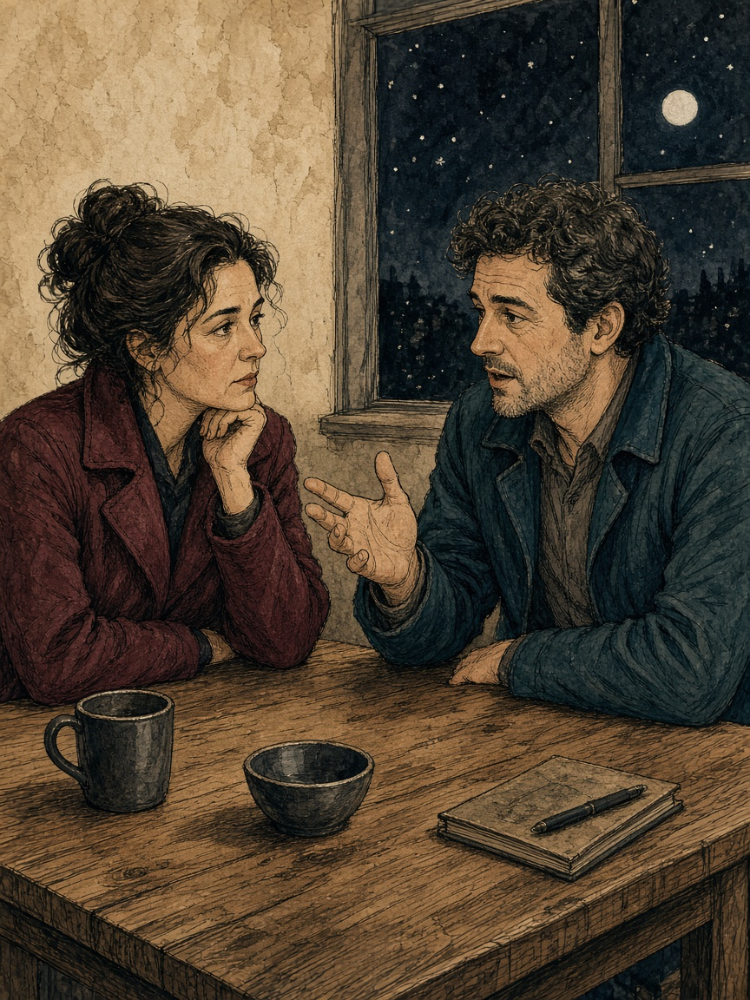

03 · Closeness · circle
Sit. Let the air be ordinary.

03 · Closeness
Settle the seats before you start.
Remember: the length, and one notice. Skip any claim that you synced.
Either of you may end the sit. Ending is a finished turn.
C01 sample · source 019 · not a finished card
05 · Desire · diamond
Sort in private. Compare only the stars.
05 · Desire
Two private sheets. No shared screen until the stars are chosen. You are sorting ideas, not doing them tonight.
A star is not consent. A maybe is not a promise. Skip any lane. If either of you has been drinking, play another night.
Layout sample · source 034
08 · Trust · square
One small difference. Then stop.
08 · Trust
Agree that “pause” stops the topic. Breakups, money crises, jealousy, and in-law emergencies are off the list tonight.
Remember one line of the other person’s care, if you want a note.
Say “pause” and you both stop. A stopped topic has no penalty and no make-up debate tonight.
Layout sample · source 059
05 · Desire · small proof
Same back as the large card, set at 2.75 by 4.75 inches.
A star is not consent. Skip any lane.
2.75 × 4.75 in comparative
Proof notes. Large pages are 3.5 by 5.5 inches. The last card is 2.75 by 4.75 inches. The dashed line is an on-card safe guide, not a vendor die line. Bleed of 3 mm is not included in this trim-size file.
The picture is the smoke test, reused to judge the crop. It is not three illustrations and not an approved card.
Body type on the large cards is 10 pt Calibri. The small card is 8 pt, under the 9.5 pt floor, and is a comparison, not a candidate for production.